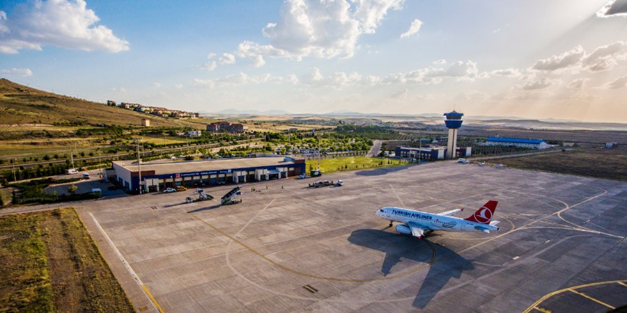

Cappadocia

Visiting Cappadocia should be on everyones bucket list.
Cappadocia looks like a fairytale kingdom, with rock chimneys and winding valleys, hidden churches and underground cities and luxurious cave hotels.
Things to do
Visit the Göreme Open-Air Museum
Located right at the center of Goreme town, the Goreme Open Air Museum is an outdoor museum where you will find the most well-preserved rock-cut caves, churches, and dwellings in the area that are being protected and preserved by the museum for all of us to see.


Epic Hot Air Balloon Ride
One of the most most popular things to do and the main reason why people want to visit Cappadocia in the first place is to go on a Hot Air balloon Ride, and there is no better place to do so than here.
At sunrise, hundreds of hot air balloons drift through the valleys and float over the fairy-tale landscapes. As the best hot air balloon ride in Turkey, it’s a magical experience and one of the best things to do in Cappadocia.

Hike the Red Valley
It is no secret that Cappadocia is a hiker's heaven, and one of the best hikes you can do is the Red Valley hike, which is located not too far from Goreme city center. It is also not very long and can be combined with the Rose Valley hike to create a 2-3 hour hike. One of the most memorable things to do in Cappadocia is to go hiking through its iconic rocky landscape.

How to get there
Direct flight from a major UK city to Istanbul, and then a domestic flight to Kayseri or Nevsehir. Nevşehir Airport (NAV) is the closest airport to Cappadocia, located just 40 minutes from the city center. Kayseri Erkilet Airport (ASR) is around 70 minutes east of Cappadocia.

Best time to visit
Cappadocia is a unique year round destination, with each season offering really varied experiences.The main advantage in going in the summer months is that the weather is more stable and therefore, it is easier to guarantee a hot air balloon flight. If the winds are too high, the balloons cannot fly.
Where to stay
There are 5 main areas to stay in Cappadocia that all offer great options for places to stay.
- Göreme
Best for: Close up views of the balloons, restaurants and nightlife. Great for visitors without a car.

- Uçhisar
Best for: Luxury hotels and, as the highest point in Cappadocia, the views over are awesome.

- Çavusin
Best for: visitors seeking a quieter more remote stay, access to hikes and views of the sunrise balloons.

- Ürgüp
Best for: Those seeking a cave hotel experience in a more tranquil setting.

- Ortahisar
Best for: Those seeking luxury at a more reasonable price and budget travellers.